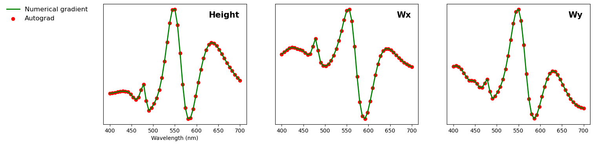

**SolverM**
SolverM: is an efficient GPU-based Solver for Maxwell's equations in
computational electromagnetics.
## **Introduction**
Understanding and controlling the interaction between light and matter
is crucial for physics and engineers. Despite ongoing efforts to develop numerical
techniques and deep learning approaches for forward simulation and inverse scattering problems, efficiently solving for three-dimensional (3D) complex systems remains challenges.

**SolverM:** is an accurate and fast Solver for Maxwell's equations.
- SolverM enables ultrafast simulations through GPU accelerations without requiring discretization of the additional time dimension or involving eigen problems.
- SolverM is efficient for simulating both subwavelength gratings and large-scale structures, delivering high performance for accurate applications in optical metrology, computational lithography. It also enables efficient simulation of large-scale metasurfaces and facilitates the design of photonic structures.
## **Benchmark**
The following sections provide examples and benchmarks for SolverM. Validation of SolverM is
conducted through published documentations. However, it's important to note that **comparisons are relative**, as variations in numerical efficiency can arise from differences in simulation methods, programming languages, simulation targets, computer resources... Our primary objective is to develop efficient solutions for complex 3D nanostructures.
## **Plasmonic sensor **
We present a plasmonic sensor simulation in
on Schlipf and Inga A. Fischer, Optics express, 2021.
The plasmonic sensor is composed of metallic nanoarrays on bottom homogeneous layers.
In SolverM, a structure is presented through its layer components.
A grating layer is defined by three attributes: mask, base material,
and grating material, while a homogeneous layer is defined by mask and
base material. In the plasmonic sensor, the metallic nanoarray is defined:
```python
layer['mask']=SM.Geometry.Circle(CD=Diameter,Cx=Lx/2,Cy=Ly/2) # nanohole
layer['grating']={'eps': e_water,'name':'water'} # nanohole in water
layer['base']={'eps': e_Al,'name':'Al'}
```
and the homogeneous layer is defined:
```python
layer['mask']=SM.Geometry.Homo()
layer['base']={'eps': e_SiO2,'name':'SiO2'}
```
To verify the geometry before performing simulations, SolverM offers
visualization of the defined geometry in the XY, XZ, and YZ planes.
Nanostructure dimensions are presented in pixel length (user define).
In the XY plane, SolverM provides the option to display either all layers
or specific layers of interest within a structure
```python
SM.Geometry.XY(Geometry,pos_layer=[0,1,2,3])
```

```python
SM.Geometry.XZ_YZ(Geometry)
```

**Simulation time:**
SolverM requires less than 1s for *standard resolution*, and 5s for *fine resolution*
to compute optical responses at 81 wavelength points: Reflectance, Transmittance and Absorbance of
the 3D-plasmonic structure in water. SolverM is two orders of magnitude faster than the method
described in this study..
## **Mueller Matrix Ellipsometry-Si gratings **
In the example, we reproduce the Mueller matrix obtained from ellipsometry measurement
of 2D Si gratings, adapted from
Martino et al.,SPIE Proc,2008.

Mueller matrix ellipsometry is a non-dectructive, non-contactct measurement technique to characterize nanostructures. By measuring all polarizing states of the sample, Mueller matrix ellipsometry is very sensitive to optical responses and has been extensively used for optical metrology applications.
The simulation of Mueller matrix ellipsometry is essential for solving inverse problems to reconstruct nanostructures from the measurement.
**Simulation time:**
SolverM requires about 1s to compute the Mueller matrix of AOI=45, Azimuth
=[0, 15, 30, 45, 60, 75, 90].

## **GaN supercell**
In the benchmark, we reproduce the diffraction efficiency of μm-scale 3D metasurface arrays in
Elsawy et al., Scientific Reports, 2019. A customized mask is used to define the GaN supercell pattern.
```python
layer_lth['mask_uf']=customized mask
layer_lth['grating']={'eps': e_GaN,'name':'GaN'}
layer_lth['base']={'eps': e_air,'name':'air'}
```
SolverM displays the GaN supercell in pixels (1 pixel =1 nm) for the simulation.

**Simulation time:**
It takes approximately 2s to compute the Transmittance and Diffraction Efficiency for
the first order of the TM polarized wave.

## **Automatic differentiation**
In computational electromagnetics, numerical gradients are often necessary for optimizations
to solve inverse scattering problems. SolverM is implemented using the PyTorch framework,
which allows for simple automatic differentiations.
In the following example, SolverM computes the numerical gradient of transmittance
with respect to geometric parameters of a silicon layer a silicon (Si) layer:
SolverM uses just a few lines of code to compute the numerical gradients. By leveraging PyTorch's
requires_grad and backward functions, SolverM can efficiently compute the gradients of
transmittance with respect to various geometric parameters (height, width in the x direction,
and width in the y direction.
```python
parameters=torch.tensor([h,Wx,Wy], requires_grad=True)
T=Sim(parameters)
T.backward(retain_graph=True)
with torch.no_grad():
grad=parameters.grad
parameters.grad=None
```
Automatic differentiation is almost identical to numerical gradients using the central difference scheme, but it is two times faster in terms of simulation time.

## **Contact**
While SolverM demonstrates impressive performances, it is still in its early stages and requires further development.
Please feel free to reach out for more information:
**Email:** phamhoanglam.fr@gmail.com